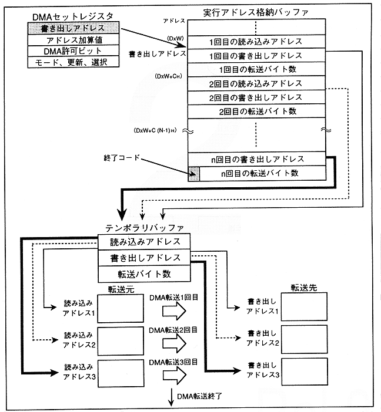

When indirect mode is activated, parameters for 3 long words are read from the address written in the write address register (DxW) first and stored in the temporary buffer. Next, the actual DMA is executed based on the parameters. After DMA, read DxW + CH address ~ parameter and execute in the same way. This operation is repeated until an exit code is detected.
In addition, the address in indirect mode is incremented by 4 bytes.
Figure 2.6 Indirect mode DMA transfer operation details
